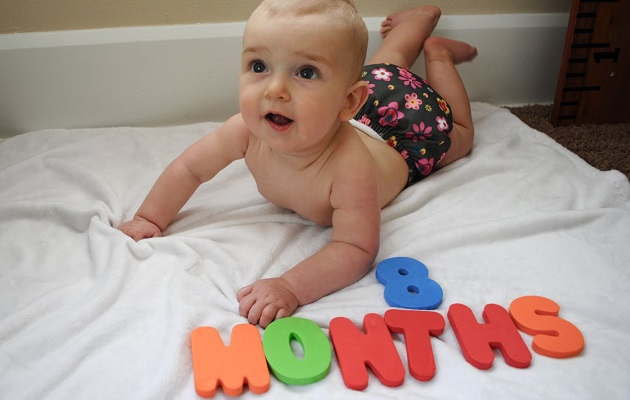

Восьмимесячный ребенок при просьбе найти предмет отыскивает его взглядом. Появляются первые звукоподражательные слова. Большинство хорошо ползают, могут вставать с опорой из положения сидя.
Восьмимесячный ребенок при просьбе найти предмет отыскивает его взглядом. Проявляет повышенный интерес к новым предметам, выражая мимикой удивление и настороженность. Интересуется своим отражением в зеркале. Самостоятельно садится и из положения сидя, придерживаясь за что-либо, становится на ноги. Главные достижения ребенка в возрасте 8 месяцев:
- ползает с большой скоростью и на любые расстояния;
- в речи возникают первые слова и звукоподражания (ба-ба, ма-ма, ав);
- появляется "пинцетный захват" - может брать мелкие предметы большим и указательным пальцами.